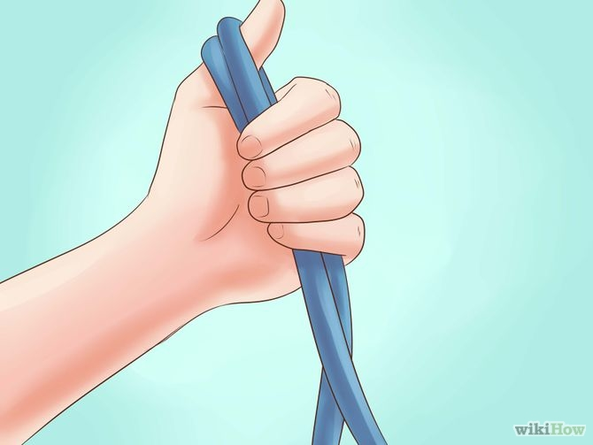
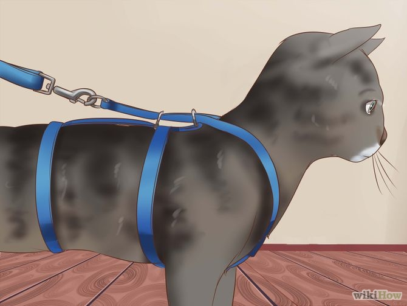
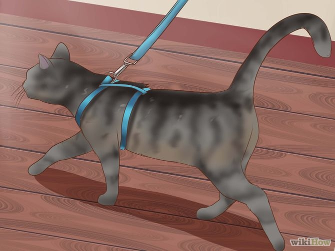
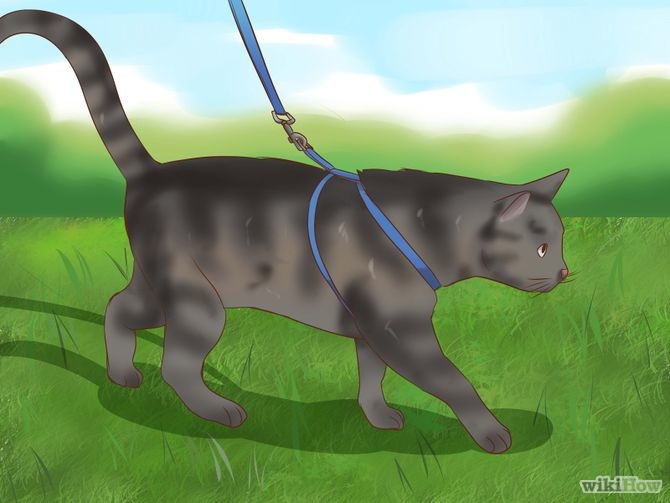
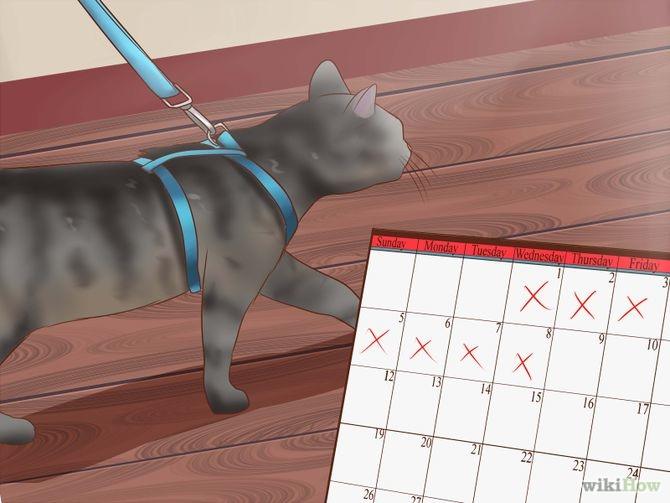

Teaching a cat to walk on a leash allows an indoor cat safe access to the great outdoors. Leash training can also be a good stepping stone if you eventually want to help your cat go outside unattended. When teaching your cat to go outside with a leash, it’s important for you to remember that the outdoors can initially seem overwhelming to a cat used to the indoors. Be sympathetic and patient if your cat at first seems alarmed or panicked. It will take time for your cat to feel comfortable with wearing a harness and going outside, so take things slowly and reward your cat with ample praise and lots of treats. Read on to learn how to get your cat safely out and exploring.
Step 1: Take Your Cat's Measurements
In order to go walking outdoors with you, your cat will need a well-fitted harness--never use a leash and collar.[1] If you’re walking your cat with a collar and the cat bolts--which cats are very likely to do--the collar can damage the cat’s windpipe, voice box, and ability to swallow. A harness will distribute the force of restraint between the cat’s shoulders, chest, and belly, making it less likely your cat will get injured.
Step 2: Choose a Harness
Most cat harnesses are made with adjustable straps designed to fit either kittens or adult cats and are made of either nylon or neoprene. Some harnesses may come in sub-sizes based on your cat’s specific measurements.The harness should be fitted to your cat’s body and should neither squeeze or cut into your cat or hang loosely off its body. If it’s fitted properly, you should just be able to fit two fingers under the harness when you put it on your cat.Never use a harness as a restraint for car rides--cat harnesses aren’t designed to protect cats in the event of a car accident.
Step 3: Choose a Leash
Cats have different leash needs than dogs, so choose an appropriate leash carefully.Some manufacturers make lighter-weight leashes designed specifically for cats, as cats are generally lighter and less forceful than dogs.[2]Bungee leashes are ideal for cats because they provide enough stretch to let your cat safely wander a bit.Avoid using retractable leashes (commonly sold for dogs) with a cat, as the leash is ill-suited to and can injure a cat.
Step 4: Put Your Cat in its Harness for Short Periods of Time
Before you’ll be able to take your cat outside, you’ll first need to get it accustomed to wearing its harness.Start by putting your cat in its harness for short periods of time every day for several days. Initially, put the harness on for just a few minutes, then increase the length of time each day for several days.Give your cat treats and lots of praise while putting on the harness and while your cat walks around wearing the harness.You want your cat to eventually feel comfortable moving around the house in its harness, ideally to the point that it doesn’t pay any mind to the harness.
Step 5: Attach the Leash
Once your cat has become comfortable with its harness, begin attaching the leash to the harness.At first, allow the leash to trail behind your cat. Encourage the cat to walk around with the leash attached by offering treats and lots of praise.
Step 6: Practice Walking with the Harness and the Leash
Once your cat has become comfortable having the leash trail behind it, pick up the leash and again encourage your cat to walk around--this time with you holding the leash.[7]Offer your cat its favorite treats and lots of praise as it begins to walk around. Try not to yank or drag the cat along as you go--let the cat move about of its own volition.
Step 7: Helping Your Cat Go Outdoors, Start Slowly
Start slowly. Don’t force your cat to go outdoors. The prospect of going outside can be quite intimidating to some cats, so if your cat is reluctant to follow you out, don’t insist. If your cat is unsure about going out, just leave the door open so it can get its bearings and take its time. If your cat doesn’t want to venture out, try again another day and be patient, it may take time.
Step 8: Help Your Cat Venture Outside
Once your cat is ready to make its way outside, follow behind and offer encouragement with treats and praise.[9]Keep the trip short-about five minutes. Any longer and your cat may become overwhelmed and be less willing to go outside again in the future.Wait for a dry day to go outside. If it’s raining or has recently rained, many of the normal scents your cat would use to navigate will have been washed away and your cat may have difficulty getting its bearings.
Step 9: Take Your Cat Out Regularly
Gradually increase the length of time you allow your cat to stay outside and make outside trips part of your cat’s regular routine.As your cat becomes more comfortable outside, allow it to wander farther from you if it chooses. Follow at the distance that the leash allows.